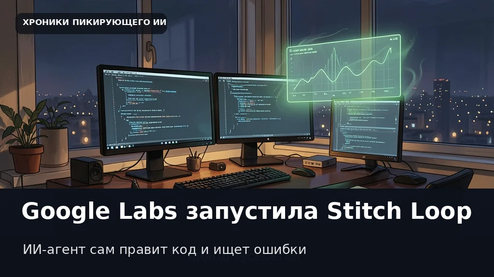

GoogleLabs выпустила StitchLoop: ИИ-агент сам чинит код и правит ошибки круглые сутки
Этот текст и иллюстрация созданы автоматически. В статье могут быть неточности; это не опубликованная редакционная новость.

Жизнь разработчика программного обеспечения полна рутины. Как только новый код благополучно отправляется в продакшен, у инженеров тут же начинается классический квест: срочно латать дыры в безопасности, ускорять загрузку страниц и разбираться, почему пользователи внезапно перестали покупать товары на сайте. Для небольших команд балансировать между созданием новых функций и бесконечной поддержкой старых — задача почти невыполнимая.
Чтобы облегчить эту участь, компания Google Labs решила запустить экспериментальный проект под названием Stitch Loop. Это долгосрочный ИИ-агент, который подключается к вашему репозиторию на GitHub и живым метрикам продукта, чтобы круглосуточно оптимизировать софт без участия человека. Идея в том, чтобы взять на себя всю чёрную работу: поиск уязвимостей, мониторинг задержек и проверку доступности интерфейса.
Работает система довольно методично. Сначала агент анализирует данные и находит, что именно можно улучшить, после чего предлагает готовые варианты решений со всеми плюсами и минусами. Когда разработчик выбирает подходящий путь, Stitch Loop в изолированном облачном песочнице пишет необходимый код и самостоятельно открывает пул-реквест. При этом финальное слово всегда остается за людьми: ни одна строчка не попадет в реальный проект, пока команда вручную не проверит изменения.
В базовый набор возможностей входят отдельные модули для кибербезопасности, задержек и доступности. Например, за безопасность отвечает связка возможностей Gemini и автономного агента CodeMender от Google DeepMind, который сканирует исходный код на наличие уязвимостей до того, как они превратятся в серьезные инциденты. Подать заявку на участие в глобальном тестировании можно уже сейчас на официальном сайте проекта.
Дата обнаружения через Hacker News (не дата первоисточника): 2026-11-18. Дата черновика: 2026-11-18.